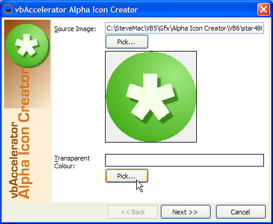
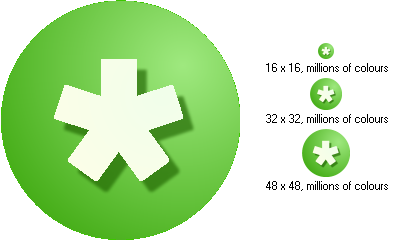
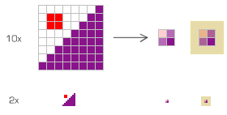

VB5 Alpha Icon Creator (186K)
VB5 Alpha Icon Creator (186K)
 VB6 Alpha Icon Creator (179K)
VB6 Alpha Icon Creator (179K)
 15 Apr 2004
15 Apr 2004
Fixed error with setting transparent colour: it was comparing the Red colour value with the Blue value and hence only worked with shades of grey.
Added ShowInTaskbar code to the project.
Added more options for generated icon sizes.
Fixed crash when attempting to create an icon which was larger than the resampled image (for example, if tried to resampled a 640x480 image to 48x48 then the resampled version would be 48x36, which would crash the program when attempting to copy). The code now centres images which are smaller to fit.
 Reading and Saving .ICO files and resources in VB
Reading and Saving .ICO files and resources in VB

Alpha Icon Creator Utility
Create 32bit smooth alpha-blended icons with smooth edges in various sizes
This utility helps you to create 32-bit icons with alpha channels in multiple sizes from a single bitmap source image using Alpha Resampling to create smartly downsized images with smooth, blended edges.
About the Utility
The utility has a very simple interface; first select a bitmap that you want to resample down to create the icons. The code will automatically pick the colour of the top, left pixel of the image as the transparent colour but you can choose an alternative colour if necessary. Then choose the icon sizes you want to create, a file name for the icon and click next, and the image is resampled and the icon created.
For best results, the source image should be an even multiple of each of the icon sizes you want to create. For example, if you want to create 16x16, 32x32 and 48x48 icons, then a source image of size 480x480 is a good choice since this is evenly divisble by each icon size (480/16 = 30, 480/32 = 15, 480/48 = 10). The code still works for images of any size, but it has to do more work to calculate the fractional contribution of source pixels that straddle multiple pixels in the output.
Here's an example of a source image and the resulting icon images:
Source Image and resulting icon images
Creating Alpha Icons - An Overview
The concept of resampling an image and using an alpha channel to feather the edges is described in the Alpha-DIB section article Alpha Resampling. The idea is that you start with a single, pixel accurate bitmap of a much larger size to the image you want to draw. Then you assign the background colour of the bitmap as the "transparent" colour. This colour is then mapped so that in the destination image it has an alpha value of 0, i.e. the destination pixels are completely transparent. Then say you want to create a version of the image that is 1/4 of the size. Each pixel in the smaller version of the image corresponds to 16 pixels (4 x 4) in the source image. Then, rather than just averaging the colours in each of the source pixels to create the output pixel, you take both the colour average for non-transparent pixels and the average overall alpha of the 16 pixel cell. The result is then the colour average with the overall alpha applied. This means that a 4 x 4 block that is half filled with black pixels will result in a single black pixel in the output with 50% transparency, and as a consequence the sampled-down image looks much smoother to the eye.
An example of this process is shown in the figure below:
Resampling with Alpha
Icons are internally stored in Windows as DIBSections, as described in the cFileIcon article. The main difference between an icon and a standard Windows bitmap are two fold:
- An icon can store multiple renderings within the same file structure, with different sizes and colour depths. These are called Device Images.
- Each icon Device Image contains two DIB Sections: the image (which is just the image bitmap) and the Mask. The Mask is a monochrome DIBSection (i.e. it uses just 1 bit for each pixel) in which the pixels are 'white' (1) were the icon should be transparent otherwise they are 'black' (0).
Note that for images with an alpha channel, the Mask image is redundant, since the alpha channel itself can encode which pixels should be transparent (and also enables the much-needed ability to provide partially transparent pixels). However, typically the Mask for an icon with an alpha-channel is still set to exclude each pixel that is completely transparent (alpha = 0) in the image.
Once you have code which can read and write these image parts to the correct icon structure in memory, you can then easily create icons in code from other bitmaps or DIBSection objects.
The sample code adds a couple of extra methods to the cFileIcon class to allow DIB data to be copied into the icon structure in memory:
Public Sub SetImageBits(ByVal lIndex As Long, ByVal lPtr As Long)
'
Dim tBMIH As BITMAPINFOHEADER
Dim lXor As Long
' Get the icon device image size:
CopyMemory tBMIH, m_tBits(lIndex - 1).bBits(0), Len(tBMIH)
tBMIH.biHeight = tBMIH.biHeight \ 2
' Find the address of the Image bits:
lXor = FindDIBits(tBMIH)
' Copy the image DIB bits directly into the image:
CopyMemory m_tBits(lIndex - 1).bBits(lXor), _
ByVal lPtr, _
tBMIH.biHeight * WidthBytes( _
tBMIH.biWidth * tBMIH.biPlanes * tBMIH.biBitCount)
'
End Sub
Public Sub SetMaskBits(ByVal lIndex As Long, ByVal lPtr As Long)
Dim tBMIH As BITMAPINFOHEADER
Dim lXor As Long
Dim lAnd As Long
' Get the icon device image size:
CopyMemory tBMIH, m_tBits(lIndex - 1).bBits(0), Len(tBMIH)
tBMIH.biHeight = tBMIH.biHeight \ 2
' Find the address of the Image bits:
lXor = FindDIBits(tBMIH)
' Find the address of the Mask bits offset from the Image bits:
lAnd = lXor + m_tIDE(lIndex - 1).bHeight * 1# * WidthBytes( _
tBMIH.biWidth * tBMIH.biPlanes * tBMIH.biBitCount)
' Copy the mask DIB bits directly into the array:
CopyMemory m_tBits(lIndex - 1).bBits(lAnd), _
ByVal lPtr, _
WidthBytes(tBMIH.biWidth) * tBMIH.biHeight
End Sub
Now you can set the image of the icon directly from a DIBSection object with the correct size and resolution just by passing the pointer to the DIBSection memory into the SetImageBits method:
Dim cResampled As cAlphaDIBSection ' Resample the input bitmap: Set cResampled = m_cSource.AlphaResample(lWidth) ' Set the alpha bits to the result cFI.SetImageBits lIndex, cResampled.DIBSectionBitsPtr
Setting the mask bits is a bit harder since we need to create a monochrome DIB with all bits set to 1 where the image is transparent otherwise 0. To do this, a byte array is created to hold the mask and the alpha image is read pixel by pixel to set the byte array information, and then finally the memory in the byte array is copied into the mask:
Dim b() As Byte
Dim lWidthBytes As Long
lWidthBytes = ((cResampled.Width + 31) \ 32) * 4
ReDim b(0 To lWidthBytes - 1, 0 To lHeight - 1) As Byte
createMask cResampled, b()
cFI.SetMaskBits lIndex, VarPtr(b(0, 0))
..
Private Sub createMask( _
cDib As cAlphaDIBSection, _
b() As Byte _
)
Dim lWidthBytes As Long
Dim lHeight As Long
Dim lCurVal As Long
Dim lBit As Long
Dim x As Long
Dim y As Long
Dim tSA As SAFEARRAY2D
Dim bDib() As Byte
Dim xOut As Long
Dim yOut As Long
' Get the bits in the from DIB section:
With tSA
.cbElements = 1
.cDims = 2
.Bounds(0).lLbound = 0
.Bounds(0).cElements = lHeight
.Bounds(1).lLbound = 0
.Bounds(1).cElements = cDib.BytesPerScanLine()
.pvData = cDib.DIBSectionBitsPtr
End With
CopyMemory ByVal VarPtrArray(bDib()), VarPtr(tSA), 4
xOut = 0
For x = 0 To cDib.BytesPerScanLine() - 4 Step 4
If (lBit = 8) Then
lBit = 0
xOut = xOut + 1
End If
For y = 0 To lHeight - 1
yOut = y
If (bDib(x + 3, y) = 0) Then
' Output = 1
b(xOut, yOut) = BitSet(b(xOut, yOut), lBit)
Else
' Output = 0
End If
Next y
lBit = lBit + 1
Next x
' Clear the temporary array descriptor
' (This does not appear to be necessary, but
' for safety do it anyway)
CopyMemory ByVal VarPtrArray(bDib), 0&, 4
End Sub
Private Function BitSet(ByVal b As Byte, ByVal lBit As Long) As Byte
Select Case lBit
Case 0
b = b Or &H1
Case 1
b = b Or &H2
Case 2
b = b Or &H4
Case 3
b = b Or &H8
Case 4
b = b Or &H10
Case 5
b = b Or &H20
Case 6
b = b Or &H40
Case 7
b = b Or &H80
End Select
BitSet = b
End Function
Conclusion
This utility provides a simple way to create high-quality 32 bit icons with multiple sizes from a single source bitmap (of course, you still need to be able to draw the source bitmap!). The provided code can also be used for dynamic creation and manipulation of alpha-blended icons at run-time.